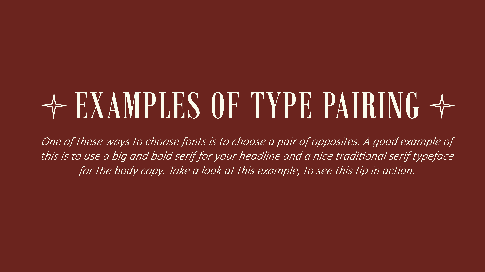
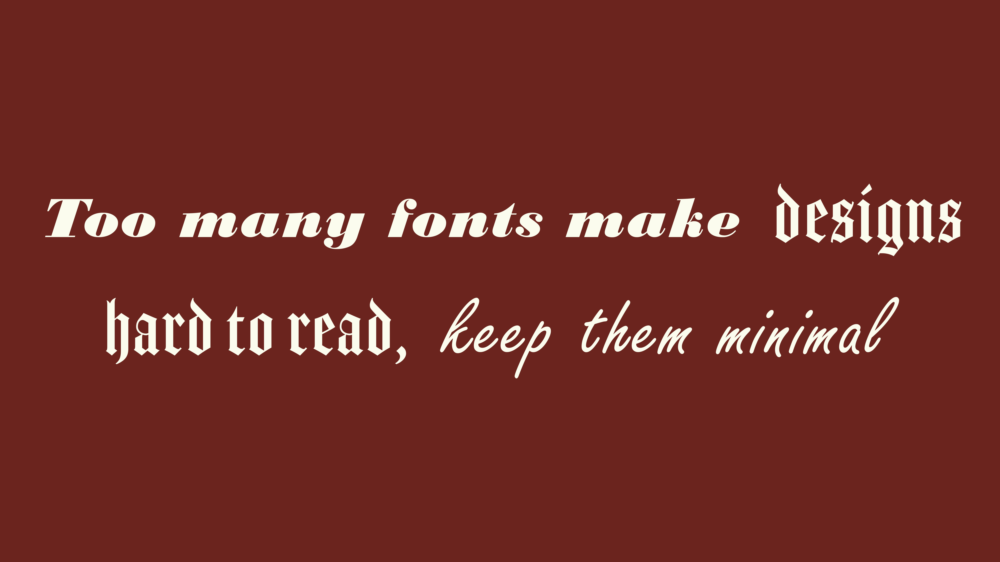
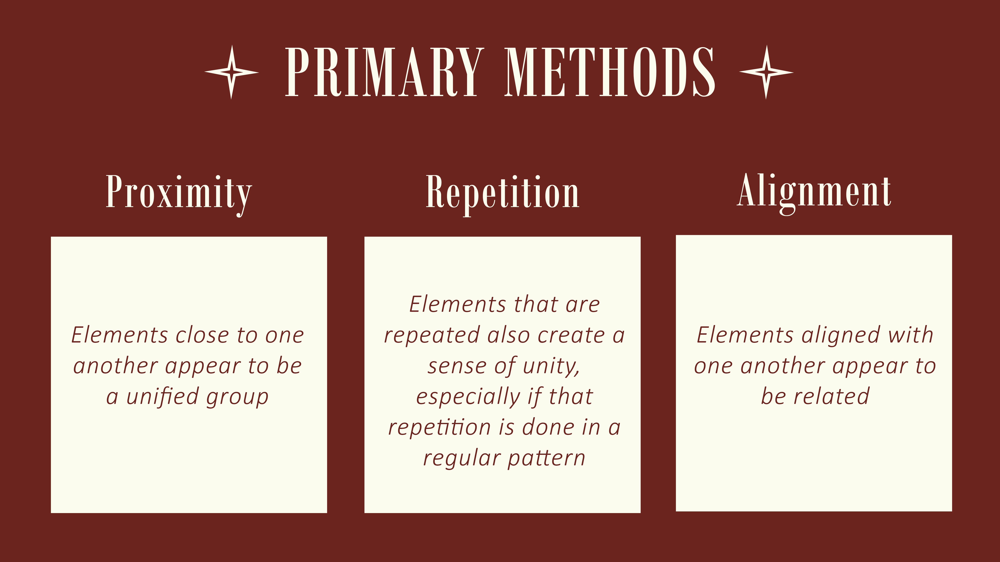

One of these ways to choose fonts is to choose a pair of opposites. A good example of this is to use a big and bold serif for your headline and a nice traditional serif typeface for the body copy. Take a look at this example, to see this tip in action.

Example of pairing two opposite fonts, a sans serif headline with a serif typeface for body copyAnother tip is to think about the width of the typeface and how they complement each other. For example, maybe you want to pair a condensed sans serif typeface with a wider san serif. While they are both the same category of type, they vary in contrast due to their width. Take a look at this example for inspiration.
Google FontsJust like choosing a color palette, it can be easy to get carried away with all the options available to use for your design. A good general rule is to stick to about 2-3 different typefaces total for a design. Now of course this might vary depending on what you are designing but it’s a good rule of thumb.

Too many fonts make designs hard to read, keep them minimalNegative space in a design, also called white space, is space that has no design elements (other than possibly a background color or subtle pattern or texture). As a design principle, negative space is essential because it gives the elements in your composition room to breathe. Without white space, pages look cluttered and are hard to navigate. Be sure to leave some space around elements on your pages, especially the most important ones. This white space makes them stand out more and facilitates a better user experience.
3 ways to use negative space in logo designUnity gives a design and sense of harmony, both visually and conceptually. Unity is important because it makes users feel at ease while navigating your design. Everything appears to be in its proper place and there are no jarring elements that stand out in a negative way. Unity can be created in a number of ways.
Unity